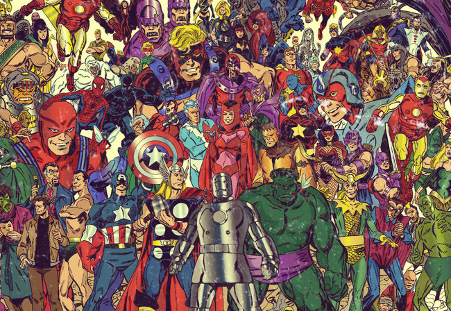
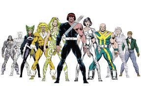

Equipes da Marvel
Apesar da Marvel ter alcançado o sucesso absoluto recentemente com os Vingadores no cinema, nos quadrinhos a editora possui um leque muito mais amplo de super-equipes. Nesse texto vamos destacar quais são as atuais super-equipes com revista própria na Marvel. As formações que citaremos aqui serão sempre as mais recentes possíveis. O texto será recorrentemente atualizado.
Vingadores
Membros atuais: Homem de Ferro, Capitão América, Thor, Namor, Fênix, Valquíria, Capitã Marvel, Blade, Estigma e Falcão Noturno. A equipe é a referência em super-heroísmo da editora no momento. O atual QG é na Montanha dos Vingadores, dentro de um corpo abandonado de um Celestial. O grupo enfrenta ameaças de grande escala pelo globo inteiro.

X-Men
Membros atuais: Ciclope, Wolverine, Jean Grey, Sincro, Polaris, Solaris e Vampira. Atualmente os X-Men são uma equipe oficial que representa Krakoa, a nação mutante. E todos os anos, durante a cerimônia do Hellfire Gala, a população elege uma nova formação para seguir lhes representando. Inclusive, um integrante da equipe é sempre eleito via voto popular pelos leitores.

Guardiões da Galáxia
Membros atuais: Senhor das Estrelas, Groot, Rocket Racoon, Phylla-Vell, Serpente da Lua, Gamora, Hulkling, Wiccano, Nova, a Quasar, o Quasar, Super-Skrull, Noh-Vatt, Hércules, Drax e Mantis. Atualmente a equipe dos Guardiões da Galáxia está bastante inflada. O grupo deixou de ser um bando de desajustados que viajam pela galáxia salvando os inocentes e agora são uma força tarefa alinhada com os principais Impérios Galácticos e efetivamente protegem o universo. Por isso a alta quantidade de integrantes.

X-Force
Membros atuais: Wolverine, Dominó, Sábia, Fera, Quentin Quire, Forge, Black Tom Cassidy e Deadpool. Atualmente a X-Force atua como a CIA de Krakoa, a nação mutante. Os integrantes são os responsáveis por proteger o país das ameaças externas. Uma das Leis de Krakoa diz que os mutantes não podem matar humanos, mas a X-Force tem a prerrogativa de matar humanos se for necessário.

Legion of X
Membros atuais: Noturno, Fanático, Fada, Pó, Dr. Nêmesis, Olhos-Vendados, Legião e Longedosolhos. Enquanto a X-Force lida com as ameaças externas de Krakoa, é a Legion of X que fica responsável pela segurança interna. Mas, apesar disso, eles não são policiais. O autor da HQ disse que não gosta da conotação e interpretação de polícia que o nome carrega.

Vingadores Selvagens
Membros atuais: Conan, Arma H, Demolidora, Anti-Venom, Cavaleiro Negro, Manto e Adaga. Essa já é a segunda formação da equipe e tal qual a primeira, eles foram unidos pelo destino. E dessa vez eles se unem quando um Deathlok do futuro surge misteriosamente na Era Hiboriana caçando o Conan.

Campeões
Membros atuais: Miss Marvel, Miles Morales, Nova, Coração de Ferro e Viv.Atualmente a equipe está mais enxuta e com a sua formação original (com a ausência de Amadeus Cho). O grupo segue com a mesma abordagem de sempre, se posicionando em temas sensíveis e atuando um pouco diferente dos Vingadores, tentando resolver os problemas da forma mais pacífica possível.

Quarteto Fantástico
Membros atuais: Sr. Fantástico, Mulher-Invisível, Tocha Humana e o Coisa.Não poderíamos deixar de falar da primeira super-equipe da Marvel. Após um hiato de publicações entre 2015 e 2018, os heróis estão de volta com sua formação clássica. A novidade é que o QG não é mais o Edifício Baxter, mas uma casa na Rua Yancy.

Fundação Futuro
Membros atuais: Alex Power, Arco-Íris, Bentley-23, Homem-Dragão, Yondu, Onome e Turg. A nova revista da Fundação Futuro ainda será lançada, com a primeira edição prevista para agosto. Até lá, a formação oficial ainda é incerta. A equipe é composta por super-gênios que estudaram com o Quarteto Fantástico e agora viajam pelo Multiverso resgatando partes do Homem-Molecular.

Agentes da Atlas
Membros atuais: Shang-Chi, Teia de Seda, Amadeus Cho, Jimmy Woo, Wave, Aero, Raposa Branca, Crescent, Io, Luna Snow e Espadachim Mestre.Os Agentes da Atlas foram reformulados por Jimmy Woo e agora são a principal super-equipe do continente asiático.

Fugitivos
Membros atuais: Chase, Gert, Victor Mancha, Nico Minoru, Lucy, Gib, Alfazema, Rufus e Molly Hayes.Após um hiato, os Fugitivos retornaram com uma nova HQ. A equipe mantém sua dinâmica original: jovens que formam uma família disfuncional, não sendo uma equipe tradicional.

Thunderbolts
Membros atuais: Gavião Arqueiro, America Chavez, Espectro, Poderoso, Persuasão e Gutsen Glory.Após serem usados como milícia por Wilson Fisk, os Thunderbolts agora são a equipe oficial de heróis de Nova York, buscando limpar sua reputação.
Defensores
Membros atuais: Loki, America Chavez, Tigresa, Marvel Azul e Taaia.Com a realidade em risco, o Doutor Estranho recrutou uma equipe mesmo após sua morte. Como de costume, os Defensores enfrentam ameaças abstratas e conceitos filosóficos vivos.

Tropa Alfa
Membros atuais: Guardião, Shaman, Sasquatch, Estrela Polar, Aurora, Pigmeu, Pássaro da Neve e Marrina.A equipe não possui uma revista mensal atualmente, mas receberá um especial em setembro. Dependendo das vendas, isso pode marcar o retorno de um título regular.

Carrascos
Membros atuais: Kate Pryde, Daken, Psylocke, Bishop, Tempo, Somnus, Aurora e Cassandra Nova.Em Krakoa, nem todos os mutantes conseguem chegar em segurança. Os Carrascos têm a missão de resgatá-los e garantir sua sobrevivência.
